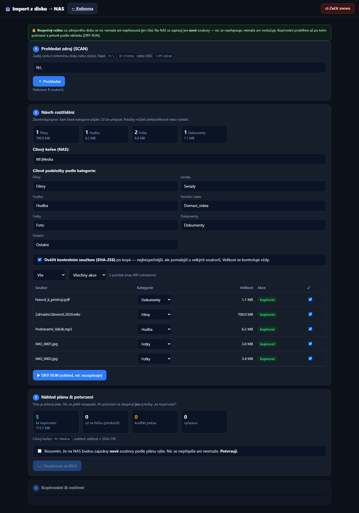
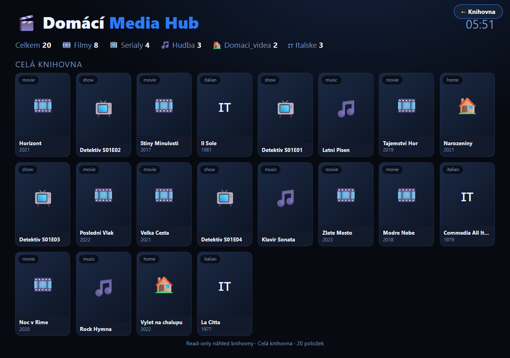

Knihovna místo složek
Hledání, filtrování a označení oblíbených nebo zhlédnutých titulů.
Filmy, seriály a hudbu z domácího úložiště procházím jako přehlednou knihovnu. U televize se k ní dostanu přes Raspberry Pi.
Soukromý nástroj v domácí síti, bez veřejného instalátoru.

Hledání, filtrování a označení oblíbených nebo zhlédnutých titulů.
Před kopírováním z externího disku ukáže plán; zdrojové soubory nemaže.
Volitelné propojení s domácím Jellyfinem doplní informace k titulům.
Na panelu u televize přepnu do Media Hubu.
Použiji hledání, filtr nebo seznam oblíbených.
Označím zhlédnuté tituly nebo si připravím import nových souborů.
Ukázky představují rozhraní. Skutečná knihovna a osobní data zůstávají mimo veřejný web.
Mám doma NAS plný filmů, seriálů, hudby a domácích videí — ale proklikávat se k nim přes síťové složky není žádná radost. Media Hub je nad tím lehký, hezký rozcestník: ukáže knihovnu jako dlaždice, umí hledat a filtrovat podle typu, označit „viděno" a „oblíbené" — a běží přímo u televize na malém Raspberry Pi.
Jen čte, nic nerozbije. Dashboard se k médiím na NASu chová striktně read-only — jen je prochází (žádné mazání, přesouvání ani přepisování). Příznaky „viděno/oblíbené" i index si drží ve své vlastní lokální databázi (SQLite), nikdy ne na NASu.
Bezpečný import z disku na NAS. Když najdu starý externí disk s rozházenými médii, Media Hub ho nejdřív jen prohledá, roztřídí soubory podle typu (filmy, seriály, hudba, fotky, domácí videa, dokumenty) a ukáže náhled plánu. Teprve po mém potvrzení kopíruje — a jen nové soubory: zdroj se nikdy nemaže, na NASu se nic nepřepisuje, vše se po kopii ověří. Pořadí je vždy prohledat → návrh → náhled → potvrdit → kopírovat → ověřit.
Obaly a popisy z Jellyfinu. Volitelně se napojí na můj domácí Jellyfin (běží na NASu) a doplní k filmům obal, žánr, délku a popis — pořád ale jen čte, do Jellyfinu ani na NAS nic nezapisuje.
Spojený s chytrou domácností. Na kiosku u televize se přepíná jedním ťuknutím mezi dashboardem chytré domácnosti a Media Hubem — dvě rozhraní, jedna obrazovka.
Knihovna — dlaždice, filtry podle typu, „viděno/oblíbené" (ukázková demo data)


Náhledy jsou s ukázkovou (demo) knihovnou — moje skutečná filmotéka na web nepatří.
Pracovní (work) verze v0.2.3 (červen 2026). Běží u mě doma na Raspberry Pi kiosku u televize, čte knihovnu z NASu. Soukromá, jen v domácí síti (LAN), bez veřejného hostingu a bez instalátoru ke stažení — skutečná knihovna ani osobní data nejdou na web. Lehké jádro v čistém Pythonu (bez závislostí), frontend ve vanilla JS.
Python (stdlib) · SQLite · Raspberry Pi kiosek · Jellyfin · LAN-only (bez cloudu)
Pozn.: aplikace běží jen v domácí síti, skutečná knihovna ani osobní data nejdou na web.